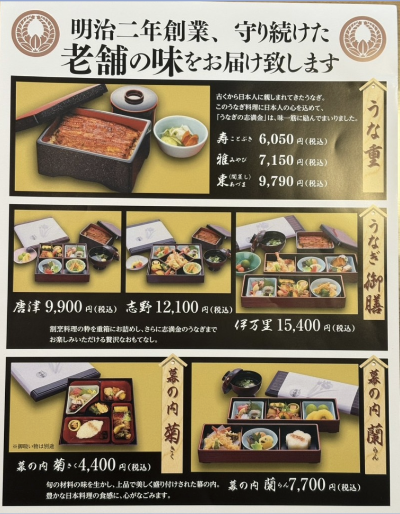

ご法事後のお食事を
ご案内いたします
ご法事後のお食事は、
ご家族・ご親族で故人を偲び、
お心を寄せ合う大切なお時間です。
ご希望に合わせてご案内いたします。
以下のいずれかをお選びいただけます
当院の客殿にて、お食事をお召し上がりいただけます。
お料理は仕出しをご手配いたしますので、ご安心ください。
多聞院にて手配が可能です。
下記のパンフレットをご参照のうえ、
ご希望の内容をお知らせください。

タップで拡大表示
ご法事のあと、ご家族・ご親族でお食事処へ移動される場合です。
お店のご予約はご家族でお願いいたします。
ご法事のみで解散される場合です。
お申し込みは不要ですが、お食事の有無のみ事前にお知らせください。
ご法事のお申し込み時、またはLINEにてお食事の有無をお知らせください。
お食事をご希望の場合、ご参加人数・お料理のご希望・アレルギー等をお聞かせください。
当院にて仕出し等のお手配をし、お料理内容を事前にご確認いたします。
ご法事終了後、お席にご案内いたします。ごゆっくりお過ごしください。
お食事のご相談は
お気軽にお声がけください